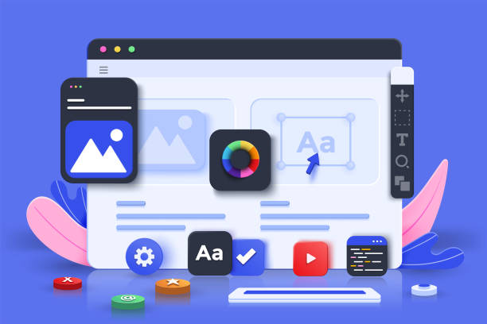

Web Development
I build responsive web interfaces backed by clean structure and practical implementation, especially for business sites, internal dashboards, and utility-driven products.
- Frontend pages with maintainable HTML, CSS, and JavaScript
- Business websites and admin-oriented interfaces
- Usability, structure, and content cleanup